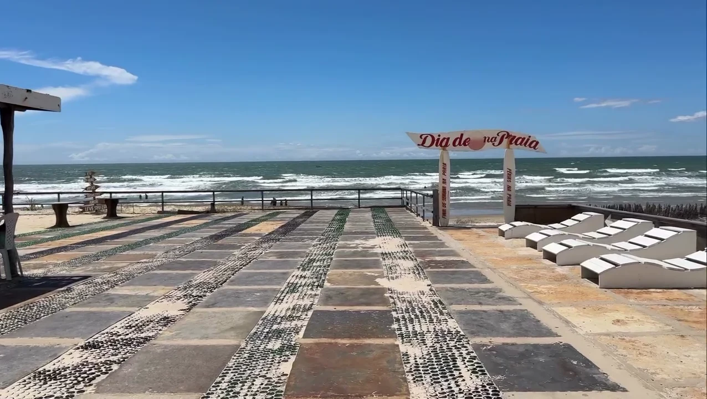
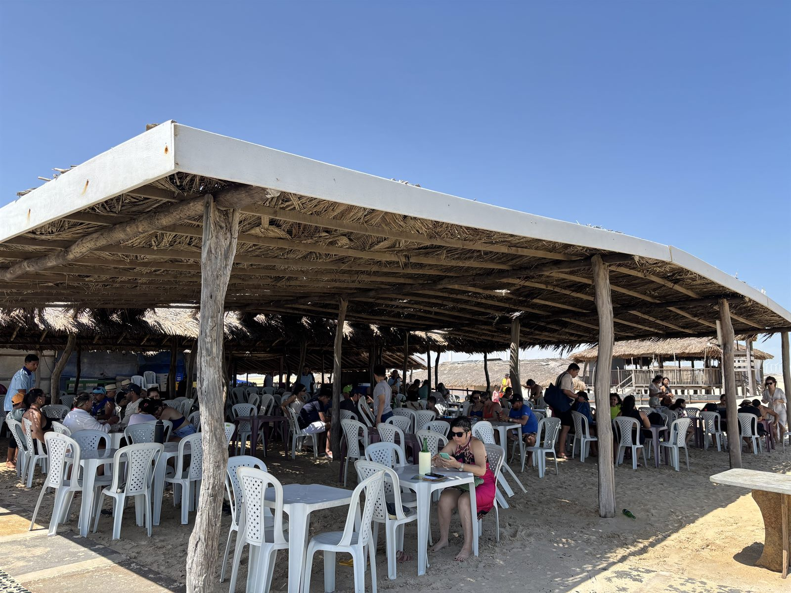
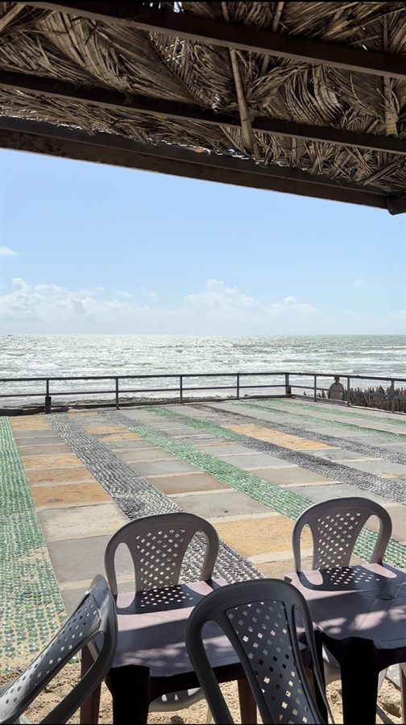

Praia do Barro Vermelho
Paulino Neves — Maranhão
“Uma das praias mais bonitas do litoral norte do Maranhão”
Destino turístico — Maranhão
Praia do Barro Vermelho Paulino Neves

A Praia do Barro Vermelho é uma das praias mais deslumbrantes e preservadas do Maranhão. Localizada no município de Paulino Neves, no litoral norte maranhense, encanta turistas com areias brancas, dunas imponentes e águas calmas.
Por estar fora do circuito turístico massificado, a Praia do Barro Vermelho mantém uma natureza quase intocada — um verdadeiro tesouro escondido do Nordeste, cada vez mais descoberto por quem visita os Lençóis Maranhenses e Barreirinhas.
A praia fica na rota entre Barreirinhas e Tutóia, tornando Paulino Neves uma parada obrigatória no roteiro do litoral maranhense.
Atrações
O que fazer na Praia do Barro Vermelho
Banho de Mar
Águas calmas e mornas, perfeitas para toda a família. Trecho raso ideal para crianças.
Passeio pelas Dunas
Dunas de areia branca formam um cenário espetacular. Caminhar ou andar de buggy pelas dunas é inesquecível.
Frutos do Mar Frescos
Comer camarão e peixe fresco com os pés na areia na Barraca do Ivan é a experiência gastronômica mais autêntica do Maranhão.
Fotografia
A paisagem é um espetáculo para fotógrafos. Dunas, mar e céu criam cenários únicos em cada hora do dia.
Pôr do Sol
O pôr do sol na Praia do Barro Vermelho é mágico. As cores do céu refletidas nas dunas criam um espetáculo único.
Pesca Artesanal
A região preserva a cultura da pesca artesanal. Observe pescadores locais e a vida marinha da costa maranhense.
Na Praia do Barro Vermelho
Almoce na Barraca do Ivan
A Barraca do Ivan fica diretamente na Praia do Barro Vermelho. Servimos frutos do mar frescos, camarão grelhado, peixe frito, petiscos e bebidas geladas. Atendemos também grupos e excursões!
Fotos
Praia do Barro Vermelho


Acesso
Como chegar à Praia do Barro Vermelho
A Praia do Barro Vermelho fica em Paulino Neves – MA, na rota entre Barreirinhas e Tutóia. Fácil de incluir no roteiro dos Lençóis Maranhenses.